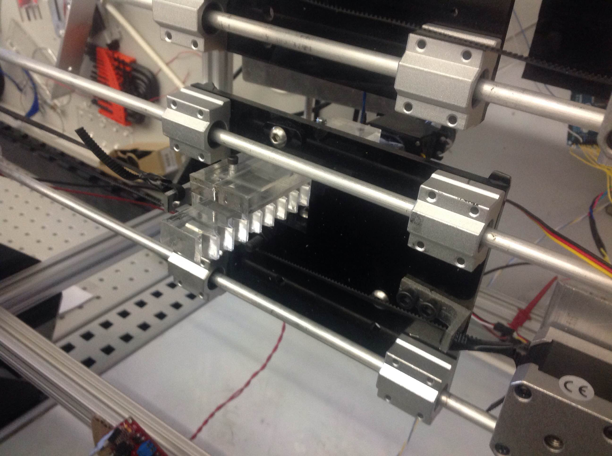
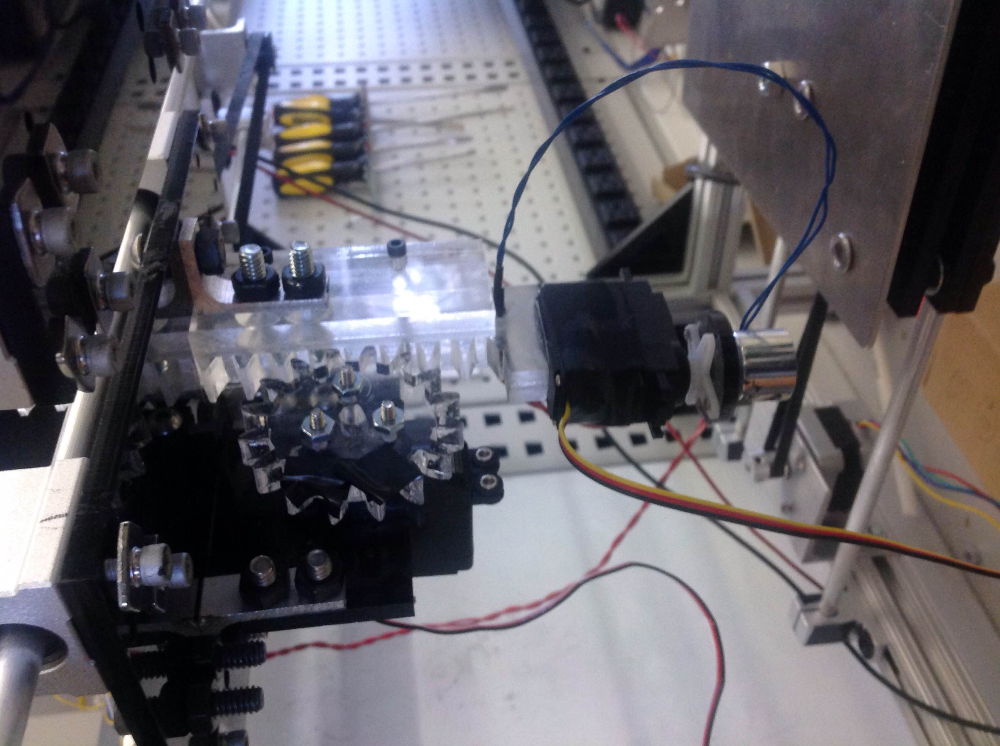
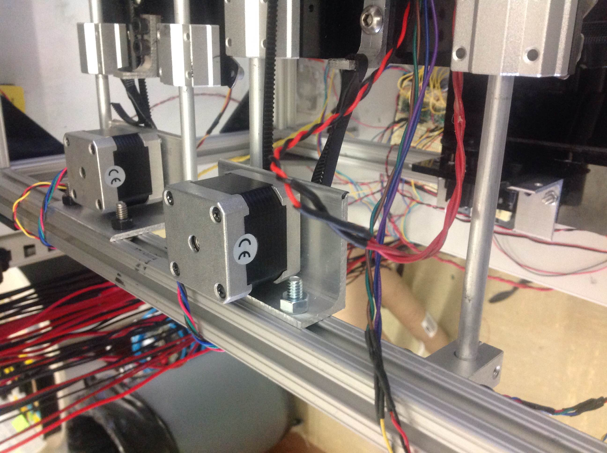

16-778, 18-578, 24-778 Spring
2015
Group G
Eric Newhall (enewhall)
Guillermo Cidre
(gmcidre)
Christian Heaney-Secord (cheaneys)
Michael O'Connor
(mkoconno)
Part Placer
Design
The Part Placer system is a platform that is attached to two of the four rails on the top of the frame.
The platform mount consists of mostly laser cut acrylic stand with machined aluminum that is made to hold
on to the rails. On top of the stand, there are two aluminum brackets facing the end of the rails.
On one end of the frame, there is a stepper motor hooked up with a spinning cylinder on an aluminum
bracker. On the other end, there is only a spinning cylinder hooked to an aluminum bracket. A timing
belt is hooked up from one aluminum bracket in the stand to the stepper motor on the end of the frame, to the
spinning cylinder in the other end of the frame, and to the other aluminum bracket in the stand in order to
achieve movement along the rails. In the center of the platform, one of the two servo motors is attached to a
spinning disk. This spinning disk is attached to a rotating track that is attached to the arm of the system.
This way, the servo motor is able to move the arm up and down. The disk and rotating track is made of plastic.
The arm consists of an acrylic stand hooked up to aluminum brackets that connects to the spinning track. Underneath
the acrylic stand, we have another servo motor attached to the stand with duck tape. This is due to change.
Other than that, the servo motor has a magnet, which will pick up the parts, attached to it. This way we can
achieve rotation on the subsystem if it is in the wrong orientation. Image of the current Part Placer is shown below.
 